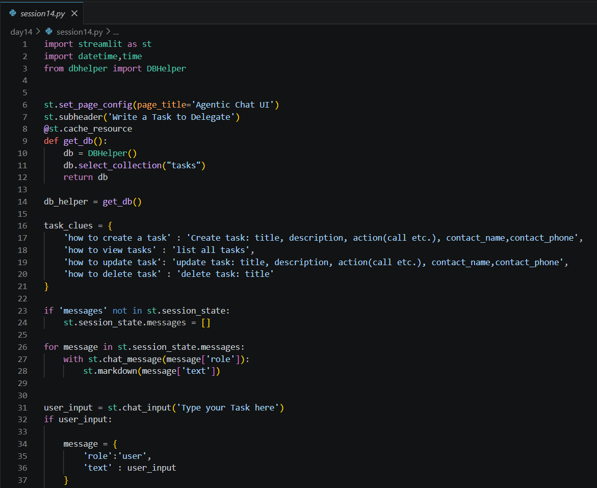
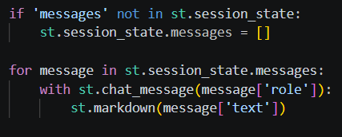
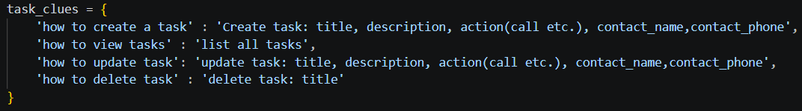
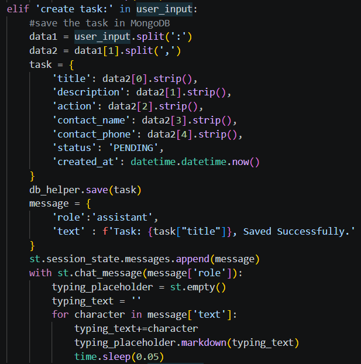
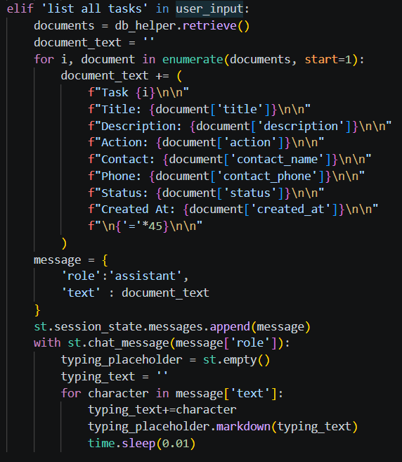
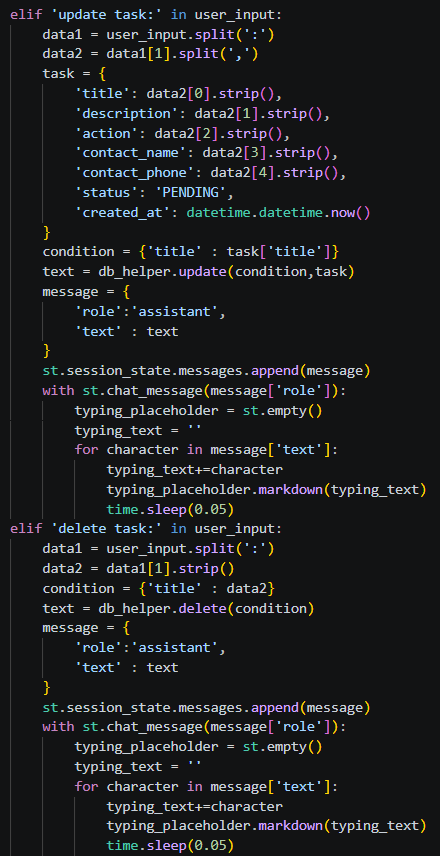
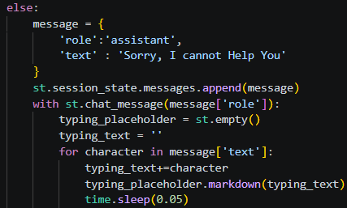

Date: 14th July 2026
Duration: 2 Hours
Training Company: Auribises Technologies
Trainer: Ishant Kumar
Day 14 focused on developing an interactive task management application using Streamlit. Instead of traditional forms, we designed a conversational interface where users could create, view, update, and delete tasks by typing simple commands inside a chat window. This session demonstrated how conversational interfaces can simplify task management while integrating seamlessly with MongoDB.
The application combined Streamlit's chat components, MongoDB CRUD operations, session management, and structured command parsing into a single project. This was also the first step toward developing an Agentic AI application capable of understanding user instructions and performing actions automatically.
The application began with Streamlit's chat interface, allowing users to communicate with the system using natural language-like commands. Messages entered by the user were displayed inside a conversational layout, while assistant responses appeared dynamically, creating a chatbot-style experience instead of a traditional web form.
To improve performance, the database connection was initialized only once using Streamlit's
@st.cache_resource decorator. Session state was also used to preserve the conversation history
throughout the application's execution.

A key concept introduced during this session was Session State. Every user and assistant
message was stored inside st.session_state, ensuring that previous conversations remained
visible even after the application refreshed. This created a much more natural chat experience similar to
modern AI assistants.
The trainer also demonstrated how Streamlit's chat components could be combined with typing animations to make assistant responses appear progressively, improving the overall user experience.

To help users understand the supported commands, a dictionary of predefined task clues was created. Whenever users asked how to create, update, delete, or list tasks, the assistant immediately responded with the expected command format, making the interface easier to use without requiring separate documentation.

The primary feature of the application was the ability to create tasks by simply typing structured commands into the chat interface. The program parsed the user's input, extracted important details such as the task title, description, action, contact person, and phone number, and then stored the information in MongoDB.
Each newly created task was automatically assigned a default status of PENDING along with the current timestamp. This demonstrated how conversational commands could be converted into structured database documents without requiring traditional input forms.

Users could retrieve every stored task by typing list all tasks. The application queried
MongoDB using the retrieve() method from the DBHelper class and formatted each document
into a readable response containing the task title, description, assigned action, contact information,
current status, and creation time.
This exercise demonstrated how backend data can be dynamically displayed inside a conversational interface while maintaining a clean and organized presentation.

The chat interface also supported updating and deleting tasks through simple text commands. For updates, the application identified the target task using its title and replaced the stored information with the new values provided by the user. Similarly, delete operations removed matching tasks from the database and returned confirmation messages indicating whether the operation was successful.
By implementing all four CRUD operations inside a conversational interface, the application became a complete task management system capable of handling the full lifecycle of task records.

The class activity involved building the complete Agentic Chat UI capable of understanding predefined task commands and interacting directly with MongoDB. The application processed user messages, identified the requested operation, performed the corresponding CRUD action, and generated conversational responses inside the Streamlit interface.
An additional practice exercise focused on understanding how command parsing works. A sample input string was divided into individual components using Python's string manipulation methods before converting the extracted values into a structured task dictionary. This helped reinforce the concept of transforming natural language-like input into machine-readable data.

No separate assignment was given during this session. The primary objective was to complete the Agentic Task Management Chat UI in class and ensure that all CRUD operations worked correctly through conversational commands. The completed project served as the practical implementation for the day's learning objectives.
st.chat_input() and st.chat_message() for creating
conversational user interfaces.@st.cache_resource to efficiently manage and reuse database connections.st.session_state.Day 14 was one of the most engaging sessions of the training because it shifted our focus from traditional web forms to a conversational interface. Building a chat-based application using Streamlit made the project feel much closer to modern AI assistants, where users interact through natural language instead of clicking buttons and filling lengthy forms.
I particularly enjoyed implementing the complete task management workflow using MongoDB CRUD operations. Seeing tasks being created, retrieved, updated, and deleted directly from chat commands demonstrated how backend logic can be integrated with an intuitive user interface. Understanding session state also helped me appreciate how chat applications preserve conversation history and deliver a seamless user experience.
Overall, this session strengthened my understanding of full-stack Python development and provided a strong foundation for future Agentic AI projects. It was exciting to see how a few well-designed Python components could work together to create an intelligent task management system capable of responding to user commands in real time.
The next session will build upon the Agentic Chat UI by introducing OpenAI integration, enabling the application to understand natural language more intelligently and generate AI-powered responses. This will move the project beyond rule-based command processing toward a true AI-assisted task management system.